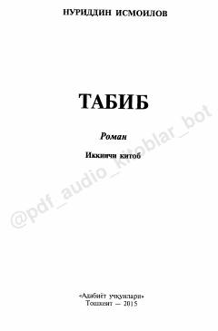

T2Tog'li qishloq tabibi Koshifning sirli va hayratlanarli hayoti haqidagi roman.
Ushbu asar sivilizatsiyadan uzoq, tog'li qishloqda yashovchi odamlarning g'aroyib hayoti va tabobat sirlari haqida hikoya qiladi. Qishloq tabibi Koshifning murakkab voqealar va insoniy kechinmalar ichidagi kurashi tasvirlangan.